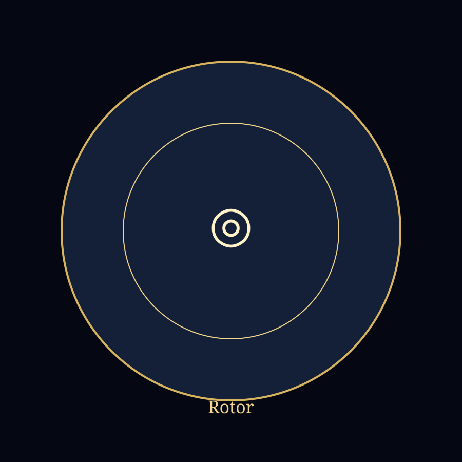

Librairie initiatique · Studio de pratique · École progressive
Rotor Optique
Vortex visuel
Rotor Optique
Une rotation externe autour d’un centre stable : fixer le point, observer, intégrer.
Protocole
- Objet seulFixer le centre.
- LumièreObserver la trace.
- RotationLe regard reste au centre.
- RetourYeux fermés, observation intérieure.